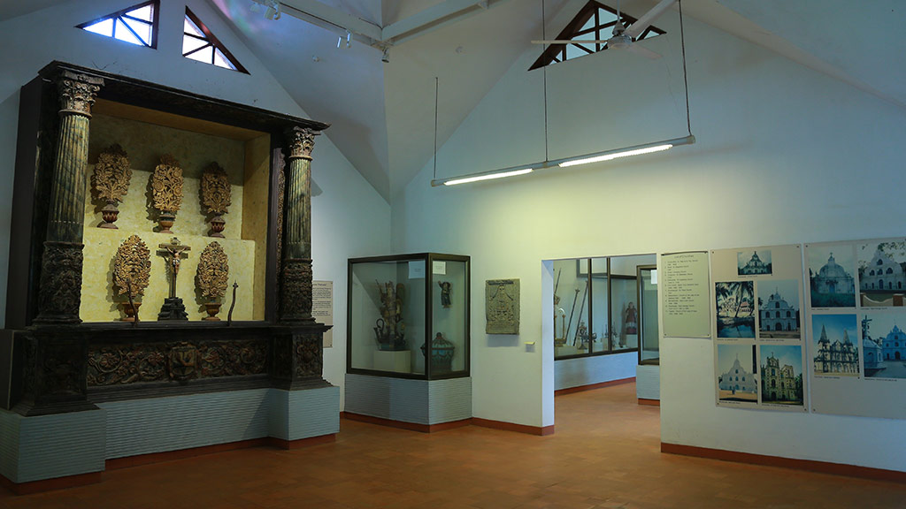

Indo-portugeese Museum
Indo-portugeese Museum
The museum was established by the efforts of the late Dr. Joseph Kureethra, Bishop of Kochi, in a bid to protect and showcase the rich cultural heritage and Portuguese influence. This museum now showcases the Portuguese influences on Fort Kochi and the surrounding areas, especially, the western parts of Kochi.